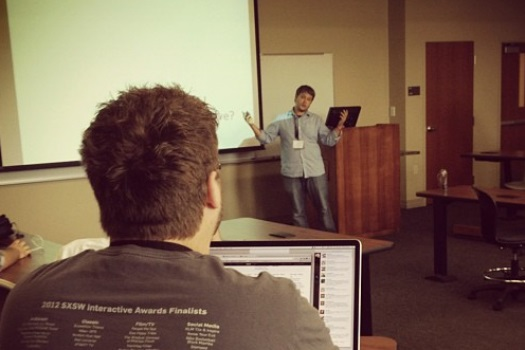
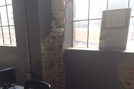
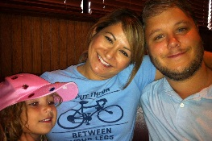

jrhicks.github.io
jrhicks.github.io
Jeffrey Hicks
A personal website where I collect and share thoughts, code, and presentations.
A personal website where I collect and share thoughts, code, and presentations.
2015/03/19 - Replicate Architecture Ideas For React-Flux Apps
2015/03/14 - Client side Routing Notes
2015/02/23 - Introduction to ES6
2015/02/07 - Getting Started with Flux on Rails
I'm a developer who tweets at @jrhicks. I blog about things I'm trying to learn. I'm a practicing 4DX coach, family guy, and I enjoy chess, bicycling, and health topics.
I work at CTEH LLC where I've been developing and maintaining a suite of Ruby-On-Rails applications for Emergency Response Management and readyness. These applications are not public facing so I've attempted to collect my public works below.

3-Way-Like-Data-Binding for PouchDB in Angular
2014/10/25
ArkansasDev Hackathon 1.0
Hacked on and released an experimental ngPouch with two UCA students who were networking in anticipation of college graduation.

Javascript’s Build Ecosystem
2014/07/26
BarCamp Little Rock
Introduction to Bower, NPM, Grunt, Gulp, Yo and a live coding demonstration on how to use them together to build a gorgeous hybrid iPhone app and staticly generate a responsive website.
OmniAuth in Rails
2012/06/12
Barcamp Conway
Using 3rd party authentication and data to deliver more value quickly.
In Production-Use Gems
PageFor - Collection of skinable Rails Helpers for rendering User Interface Components and Layouts
PolyWag - Reduces controller boiler plate code without hidden side-effects
Experiments
Wikismith - A gulp static site generator that created this site.
Under executive guidance and professional consulting from Franklyn Covey, I'm part of small coaching team that help 30+ teams execute consistently on their most important goals.

I met with Acorn Hours CEO at barcamp Little Rock and helped him set his goals and leads. A small personal scoreboard was created after our 2nd meeting.
I've met with with Lawson and Company 3 times to introduce 4DX and help them develop their Lead and Lag Mesaures. On the 3rd meeting they finalized their lead measures, crafted the best physical scoreboard I've ever seen - and practiced holding weekly WIG sessions. session

We live in Maumelle, Arkansas. On weekends we like to grab lunch and enjoy the weather.

This is Lili and me a few years ago at Seagrove Beach. We've been together since the summer of 1999 and still going strong.
Our world revolves around Ava. In this photo she is doing a cheer pose and is pretty excited about casual-day at school.
You can find me on Chess With Friends, riding my bike around the Little Rock river trail, or spouting off some diet trivia I've recently read. I like to program to Atmospheric Drum and Bass